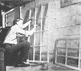
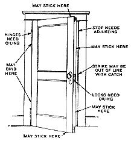
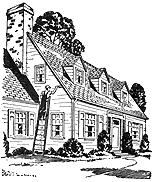
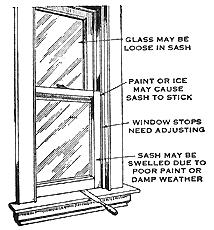
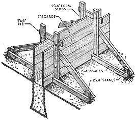
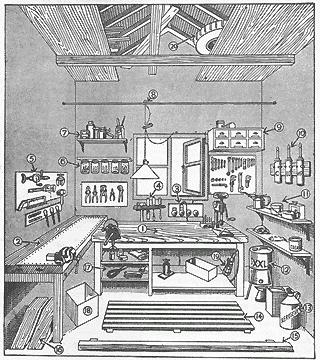
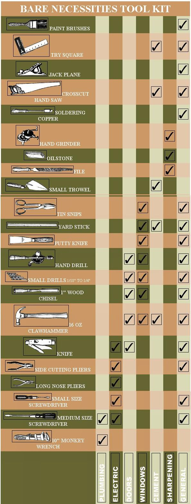

WHEN we lived in a city apartment we didn't even want to know how to fix a dripping faucet or repair a sagging door or paint our storm windows.
It's different when you have a place in the country of your own - you want to learn how to maintain your homestead. You also want to utilize all the labor-saving equipment that is practical. It doesn't seem right not to understand the workings of machines and devices we have to depend on every single day. And what a difference between the resentment you sometimes feel when you have to pay big repair bills and the feeling of real satisfaction you get from making repairs yourself. Even if you've never done more than stand by and watch a carpenter or a painter or a plumber at work there are a few simple repair jobs you can learn to do that will mean a big cash saving and a very pleasant form of recreation. Of course some jobs are frankly annoying, but I do think many are relaxing and fun to do. On days when other things don't go just right you come home from work mentally tired. Then your workshop can be a welcome refuge and little constructive jobs you do will reward you with a sense of accomplishment.
One morning last February the sink in our kitchen refused to drain properly and when I tried to clear it with the rubber plunger the water only backed up more. Finally, I sent for the plumber and after looking over the situation he dug to our septic tank and removed the lid. By this time I felt pretty helpless because I knew so little about plumbing and hadn't properly understood the trouble at first. This sense of helplessness is something that repair people are quick to notice. It is their cue to be mysterious about whatever repairs are needed and to encourage you to feel more helpless and more completely dependent on their superior knowledge. But I asked the plumber a few questions and he finally broke down and told me that the trouble was simply a blockage of the pipe and that I could have saved about $25 if I had known enough to prevent it!
Insurance underwriters say the majority of all accidents occur at home - accidents that can often be prevented just by replacing a loose board or repairing an electric fixture, or attending to the furnace properly. For this reason alone it's more than worthwhile to learn a few practical fundamentals of painting, carpentry, masonry, plumbing, electricity and last, but not least, simple auto maintenance.
The outside of a building is best painted at least once every four years. This is because wood deteriorates rapidly when there is no paint to protect it from moisture. The hardest work in painting usually is scraping off the old paint. Correct use of paint remover, wire brush, steel wool, or a scraper can often save you hours of needless work. You should learn how to store brushes properly and also the best method of storing paint for safety from fire. The difference between flat paint, enamel, varnish, wall sizing, and water paints is basic knowledge for every homesteader. For your kitchen there is a new 25% DDT water-based paint which can be sprayed or brushed on. It is said to kill flies and insects that walk or alight on it. An application remains effective 2 to 3 months inside and 2 to 3 weeks outside.
If you like making things out of wood the first thing to make is a good workshop for your homestead. So many workshops I've seen are located in attics or cellars or barns where it's nearly always too cold or too hot or too damp or too dark to work. The workshop is worth the same consideration and planning as your kitchen. If it must be in the attic or cellar it should be properly heated, insulated and lighted. Once you have a good workshop you can make it pay for itself many times just by doing simple repairing or building. I never did any building until we put up our small barn. Since then I've watched a neighbor put up an entire two-story house single-handed. He says the amount of knowledge needed to build a small house is surprisingly Carpentry
9 ways a door can go wrong
little if you have a good set of plans. A carpenter earns about $15 a day, and by doing your own carpentry you can save that much while you yourself learn to master the fundamentals. Here is a check list of ten fundamentals in carpentry. See how many you know already:
1. How to lay shingles.
2. How to use the steel square. 3. How to file and set saws. 4. How to use the chalk line. 5. How to use a mitre box. 6. How to set girders and sills. 7. How to make joints. 8. How to hang doors. 9. How to lath. 10. How to lay floors.
One of the "trickiest" masonry jobs is supposed to be building a fireplace and chimney. But two high school boys I know apparently never heard how tricky it is because they built a fireplace out of fieldstone in a little house on Owasco Lake near Auburn, N. Y. and put up a 20-foot brick chimney. They dug and laid the concrete foundations, installed the damper, the flue, and put in fireproof bricks where required for proper fire protection. I admit they had some help - they had a ten minute conversation with a mason and read about three books! I haven't ever built a fireplace myself - about all the masonry I've done so far is to put in a cement floor in our small barn and pig pen. It's really worthwhile learning how to mix and pour concrete and lay foundations - you'll use it again and again. If your cellar is damp, look into the new damp-proofing paint. It's a white powder you mix with water and scrub into the concrete or brick. The tiny particles penetrate and then expand which is said to work wonders in waterproofing masonry. It was developed by the French for waterproofing the Maginot line and is now being manufactured in this country for general use under the name, Aquella.
Once you've learned how to repack a dripping faucet and replace a washer and clean out a trap below the sink or basin you know the three most common plumbing repairs a house needs. From there you can easily go on and learn how to install running water in your barn, or put in a modern hot water system, or an extra shower. Even if you don't want to do any plumbing work yourself I do think it is necessary to understand the operation of plumbing systems just for your own self-protection. Some people actually believe that pouring coffee grounds down the sink drain helps keep it cleaned out! You probably know others who think nothing of pouring hot grease down the sink or piling the drain full of lye indiscriminately. These people would never have a quarter of the plumbing repairs they have now if they had a better understanding of preventive maintenance.
Maybe you already know enough about electricity but what about your wife? So many fires are started by wives who don't understand the electrical appliances they use quite well enough for their own safety! Here is a little quiz in electrical safety facts every wife should know:
1. What is the difference between a volt, an ampere, and a watt? 2. What causes a fuse to blow? 3. Is it safe practice to replace a 20 amp. fuse with a 15 amp. fuse? 4. Is it safe practice to replace a 20 amp, fuse with a penny? 5. It doesn't matter if the insulation on a lamp cord is worn bare so long as the lamp is kept turned off? 6. Why is it dangerous to turn on any electrical appliance while you are touching a water pipe or have wet hands? 7. Is it dangerous to replace fuses while the floor beneath the fuse box is wet? 8. About how much current does a washing machine use compared to a toaster? 9. Why is it inadvisable to use a toaster, an electric heater, and a curling iron all at once? 10. Is it possible to get a fatal shock from a 110 volt socket?
Any woman who can answer all the above questions satisfactorily is pretty well informed on electricity. After your wife has taken this quiz she ought to have the privilege of giving you one, so here are a few additional questions for men: I. Explain how to read the electric meter. 2. Show how to make 3 different wire splices and explain the proper use for each. 3. If you make changes in the wiring does your fire insurance policy still cover you? 4. What guage wire is usually the legal minimum for house wiring? 5. What is the amperage of the ordinary house circuit? Some people may not agree, but Carolyn and I feel we ought to understand the buildings and machines and devices we have to depend on . . . understand at least enough about them so we can take care of them properly and not be too easily intimidated when something goes wrong. We think this knowledge is insurance on our way of living. This is part of the security we are seeking. It is also part of the fun we are having.
1.) Bench for light work.
2.) Bench for heavy work - sheet iron protects top.
3.) Electric outlets and switches.
4.) Small tool rack made from two converging laths, spaced 1 1/2 in. apart at one end and 1/2 in. at the other.
5.) Rack for heavy tools.
6.) Screw-topped jars for nuts and bolts.
7.) Shelf for painting materials.
8). Trolley for light - clothespin adjusts cord length.
9.) Drawer for small parts.
10.) Three grease pumps: one for Universal joints, one for
water pump, one for chassis bearings.
11.) Lubrication equipment.
12.) Five or ten-gallon oil drum on stand.
13.) Gasoline and kerosene, kept in different shaped cans to prevent error.
14.) Wooden platform protects feet from cold.
15.) Stop for front wheels of car.
16.) Ramps on which front or rear wheels can be run to facilitate greasing, etc.
17.) Shelf for washing and cleaning materials.
18.) Rubbish box.
19.) Inspection lamps.
20.) Storage in rafters for timber, fires, etc.
Perhaps the ultimate achievement in the field of "homestead mechanics" is to build your own house.
No doubt this may seem to you to be such a terrific undertaking that it is a laughable idea, but in the immediate neighborhood of our Homestead we know of six people who have built their own houses. They range from a G. I. who is just completing a three room bungalow, to an artist friend who has, over a period of four or five years, built a house worth over $20,000.
Of course, in pioneer days almost everyone, with some community help, built his own house. At the turn of the century when plumbing, electricity and central heating became common, house building became more complicated and too much of a job for all but the most ambitious. Today, however, with the development of the factory-made utility unit which concentrates on the difficult-to-build bathroom, furnace room and kitchen, building your own house becomes something a handy man with sufficient spare time might consider doing.
This factory-made utility unit includes all the major mechanical components of a house. At one stroke, and for a predetermined price, the utility unit solves most of the costly and complicated installation problems involved in a conventional house. Additional factors which make house building simpler are radiant heating, which means a much simpler foundation, and new "panel type" exterior and interior walls which are simpler to erect.
Of course, a man doesn't have to build all his house - he can build as much as he wants to. But if he were to build every bit of his house he would be able to save nearly 50% of the cost. Perhaps the most practical reason of all for building your own house is the obvious fact that today it is almost impossible to get anybody to build one for you.
What About Power Tools? There are so many different power tools available now that it's pretty hard to decide which ones are just fascinating gadgets and which can be useful enough to justify their cost.
Maybe you'd like to have a lathe, a power saw or an electric drill in your work shop but you don't want to spend a lot of money for any one of these things unless it will more or less pay for itself.
One way to figure this out is by using a simple rule of thumb that says : "Don't buy any power equipment or machine unless the number of hours you will use it in one year equal at least 1/4 the number of dollars you pay for it." This rule is based on the assumption that almost everyone's time is worth $1.00 an hour and that the time the machine saves you will be used productively. Obviously, if this time were just wasted it couldn't contribute anything to the cost of the machine. We think you can safely apply this rule to any power tool you are thinking of buying and get a fair idea of just how much you really need it.
Suggested Reading:
Pans For Ideal Homestead Workshop.35 cents
Carpentry Craft Problems $2.50
Plumbing Installation and Repair $2.00
House Wiring Made Easy $1.65
|
 Why not paint your own house? Anyone can do a good job who is willing to read up on all the little tricks of the trade. Point prolongs the life, increases value. If you do your own you can save up to 90%. |
 Common window troubles. |
 Foundation walls above grade may be formed in this manner where earth walls of the trench stand straight and true, and where a wide footing is not required. |
|
 |
 |
 |
|
 |
|
|